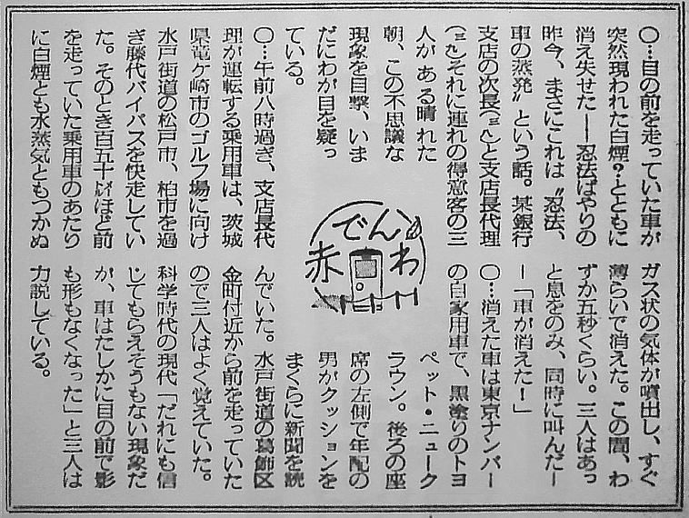

1964年3月4日、日本：前を走行していたクラウンが消えた → 毎日新聞の捏造記事
・海外の Blog 記事 http://naturalplane.blogspot.jp/2012/09/cosmic-cars-and-other-road-oddities.html に "On March 4 1964 near Kanamachi, Japan, daytime" と題されて掲載されていた。原文では以下のようになっていた（冒頭の部分のみ）。 A leading Japanese newspaper, ‘Mainichi’ carried an unbelievable story about an automobile disappearing in full view of a crowded highway. The reporting witnesses were three officials of the Fuji Bank on their way to the golf course at Ryugazaki. ・で、日本語のソース記事を探すと当時の新聞記事が見つかった。1964年3月4日の毎日新聞のコラム記事だった。  （写真のソース：http://page.freett.com/alcheringa/studies/K2012DC_PET/FINDERCLIPS_DC/FINDERCLIP.HTM ) ・上の写真が掲載されているソース http://page.freett.com/alcheringa/studies/K2012DC_PET/FINDERCLIPS_DC/FINDERCLIP.HTM では、この毎日新聞のコラム記事と以下の小説の類似を指摘している。 ・福島正実の SF 小説 ・佐藤有文の創作小説 ・福島正実の SF 小説についてはスキャン画像とテキストが http://page.freett.com/alcheringa/studies/K2012DC_PET/DC_4DMF/RW4DMF_DC.HTM に掲載されている。 ・佐藤有文の創作小説もそのテキストが http://page.freett.com/alcheringa/studies/K2012DC_PET/FINDERCLIPS_DC/FINDERCLIP.HTM に掲載されている。 ・さらに別のブログ記事 http://blogs.yahoo.co.jp/to7002/31447413.html でも、佐藤有文の創作小説をベースにした架空の事件（簡単に言えば毎日新聞の捏造記事）ではないかと推測している。 ・また下のブログでも同様の指摘がなされている。 http://roanoke.web.fc2.com/Japan/toyopet.htm
コメント： ・「毎日新聞」が半世紀も昔からこういう捏造記事を書き散らしていて、それがために今現在も海外の Blog 記事などで、日本で起きたというインチキ記事が出まわっている。 ・さすが変態新聞としてその名も高い「毎日新聞」、捏造は伝統芸だったというわけだ。 ・変態新聞の由来を知らない人は "変態 毎日新聞" のキーワードで検索w http://www.bing.com/search?q=変態+毎日新聞&form=MOZSBR&pc=MOZ http://www.google.com/search?q=%E5%A4%89%E6%85%8B+%E6%AF%8E%E6%97%A5%E6%96%B0%E8%81%9E&btnG=Search&hl=en (2012.12.14)
初出
1964年3月4日、日本：前を走行していたクラウンが消えた（毎日新聞の捏造記事） (2012-12-14)